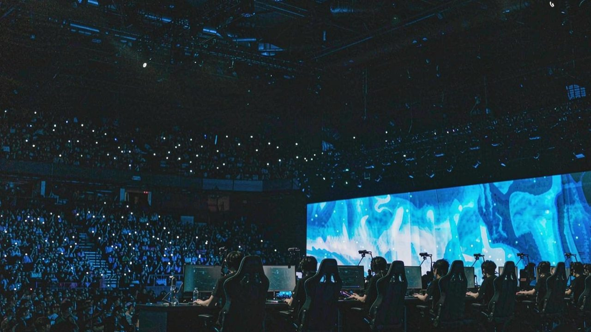

LiveHub
Android TV · 1920×1080 界面原型 · v1.0
Live
Hub
首页
关注
分类
搜索
设置
有线网络
21:14

虎牙
直播中
LPL 夏季赛 决赛日·第三局
老炮儿 · 12.4 万人在看 · 已播 2 小时 18 分
进入直播间
正在直播
全平台 1284 个
按人气排序
Live
Hub
首页
关注
分类
搜索
设置
有线网络
21:14
分类
按平台筛，或在搜索里输入房间号。
房间号各是各的
斗鱼四到八位，虎牙最多八位，哔哩另有一套短号，抖音只有抖音号。四家没有统一编号。
Live
Hub
首页
关注
分类
搜索
设置
有线网络
21:14
关注
8 位主播 · 6 位正在直播
Live
Hub
首页
关注
分类
搜索
设置
有线网络
21:14
搜索
输入拼音首字母、房间号或抖音号，边打边筛。
输入拼音首字母、房间号或抖音号
找到 4 个结果
最近搜索
‹
虎牙
·
老炮儿
·
房间号 660000
LPL 夏季赛 决赛日·第三局
12.4 万人在看
1080P60 · 已播 2:18:04
已自动切到备用线路 · 720P
直播中
弹幕
开
清晰度
1080P60
线路
主
换台
＋ 关注
按 ↑ 换台 · 返回键收起控制条，再按回首页
老炮儿
虎牙 · 房间号 660000
LPL 夏季赛 决赛日·第三局
12.4 万人在看
↑↓
换台
←→
换平台
OK
确定
返回
关闭
Live
Hub
首页
关注
分类
搜索
设置
有线网络
21:14
设置
默认值已经调好，不改也能用。
退出 LiveHub？
关注列表已经保存，下次打开还在。
继续看
退出
方向键
移动焦点
Enter / OK
确认
Esc
返回上一级
播放页
↑↓ 换台，←→ 换平台
搜索页
字母数字同屏，边打边筛